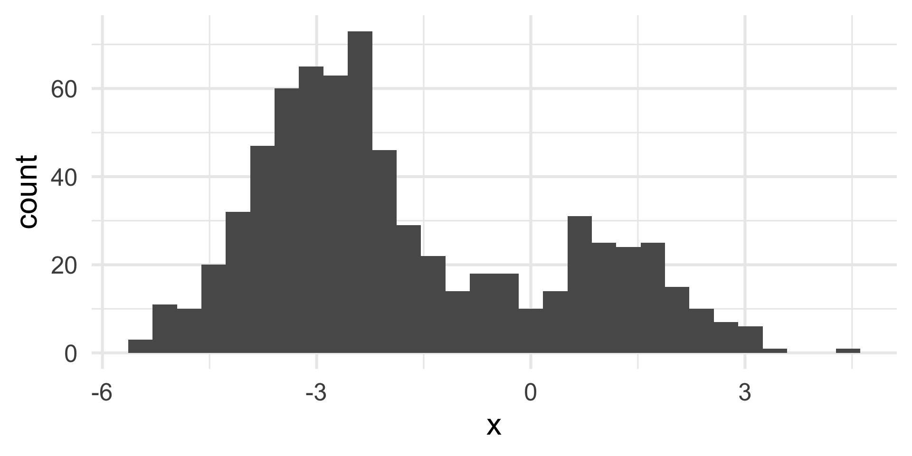

Grammar of data transformation
Lecture 4
September 4, 2025
While you wait: Participate üì±üíª
Which of the following is true about the code below?
mtcarsis the name of the variable being plotted on the x-axis- The function that goes in the blank is
map() - The data are being visualized with a scatterplot and a smooth line
- Some points on the plot will be colored differently than others

Scan the QR code or go to app.wooclap.com/sta199. Log in with your Duke NetID.
Recap: Code cells (aka code chunks)

Cell
labels are helpful for describing what the code is doing, for jumping between code cells in the editor, and for troubleshootingmessage: falsehides any messages emitted by the code in your rendered document
Participate üì±üíª
In data transformation with the pipe operator |>, what does the operator do?
- It ends a pipeline and prints the result.
- It joins two data frames together.
- It passes the output from the previous command into the first argument of the function in the next command.
- It is equivalent to the “or” operator.
Scan the QR code or go to app.wooclap.com/sta199. Log in with your Duke NetID.
Participate üì±üíª
Which type of visualization is useful for comparing distributions across groups?
- Histogram
- Line plot
- Scatterplot
- Side-by-side boxplots
Scan the QR code or go to app.wooclap.com/sta199. Log in with your Duke NetID.
Shape vs. center

Histograms provide more detail…


Strength and direction of linear relationships

Nonlinear relationships